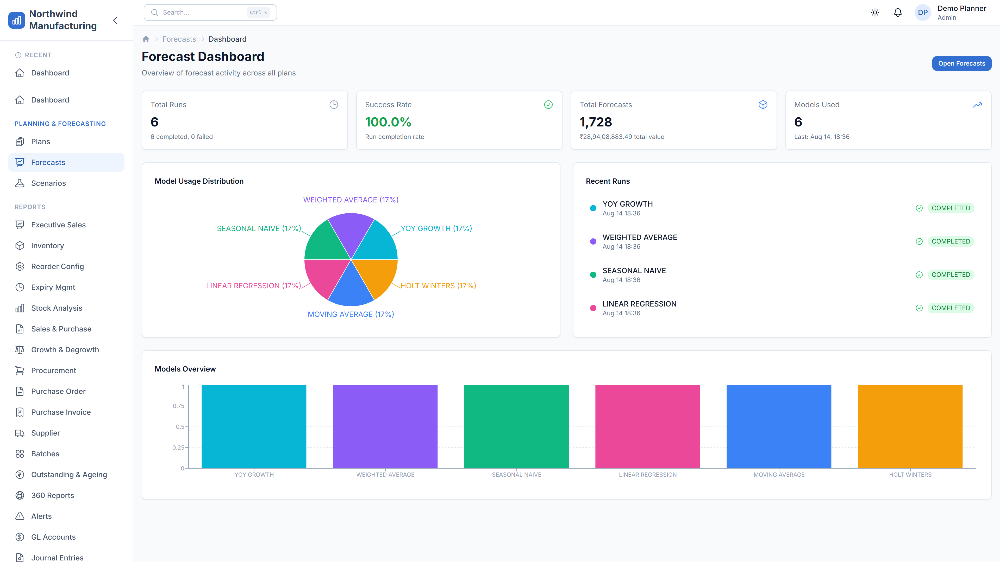

01 · Forecasting
ForecastPro
Enterprise demand forecasting & supply planning
Advanced time-series forecasting with 14 model families, automatic model selection, hierarchical reconciliation, and production deployment workflows.
- Full statistical engine: ARIMA, ETS, Croston, intermittent-demand models, and model diagnostics.
- 18 bounded contexts and 74 domain entities structured around clean architecture.
- Streaming import pipeline for CSV and Excel datasets at enterprise scale.